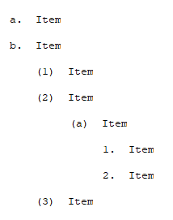
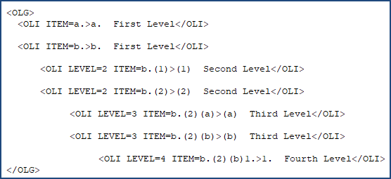
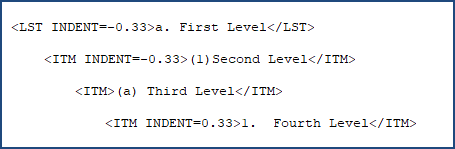

This command can also be executed by using the keyboard shortcut F4.
The Convert Manual Lists to Order Automatically command is a tool that converts list formatting in older projects that still use the legacy manual lists with LST and ITM tags. This applies specifically to projects created before the adoption of the automatic ordered lists in the UFGS Master (February 2025).
Upon execution, the legacy lists formatted with LST and ITM tags are transformed into auto-sequence alpha-numeric lists. The automatic adjustment applies seamlessly across your selected Job, Master, or specific Section(s), ensuring consistency and saving significant time and effort from manually editing the list numbering.
When the conversion process begins, SpecsIntact will search for the lists that use a combination of LST and ITM tags as outlined in the UFGS Format Standard, UFS 1-300-02, Appendix A, and convert them to the new list format, then generate a Conversion Log (SIAutoConvertLog.txt). This log file provides key information for locating lists that could not be automatically updated, providing the option to review them to determine if manual reformatting to the automatic alpha-numeric list is necessary. After conversion, the Conversion Log (SIListConvertLog.txt) file is automatically saved in the project's Exported Files folder.
 After conversion, the files within the temporary Results Files folder are your active working files. Do not delete them directly from this folder to prevent data loss.
After conversion, the files within the temporary Results Files folder are your active working files. Do not delete them directly from this folder to prevent data loss.
 Before making significant changes to a Job or Master, it's always recommended to create a backup first. You can do this easily by going to the File menu > Backup and Restore.
Before making significant changes to a Job or Master, it's always recommended to create a backup first. You can do this easily by going to the File menu > Backup and Restore.
 For backward compatibility, SpecsIntact will continue to support the legacy manual lists that use the LST and ITM tags.
For backward compatibility, SpecsIntact will continue to support the legacy manual lists that use the LST and ITM tags.
 Example of an Automatic Ordered List with tags hidden:
Example of an Automatic Ordered List with tags hidden:

 Example of an Automatic Ordered List with tags visible:
Example of an Automatic Ordered List with tags visible:

 Example of a legacy list using List (LST) and Item (ITM) tags:
Example of a legacy list using List (LST) and Item (ITM) tags:

Users are encouraged to visit the SpecsIntact Website's Support & Help Center for access to all of our User Tools, including Web-Based Help (containing Troubleshooting, Frequently Asked Questions (FAQs), Technical Notes, and Known Problems), eLearning Modules (video tutorials), and printable Guides.
| CONTACT US: | ||
| 256.895.5505 | ||
| SpecsIntact@usace.army.mil | ||
| SpecsIntact.wbdg.org | ||